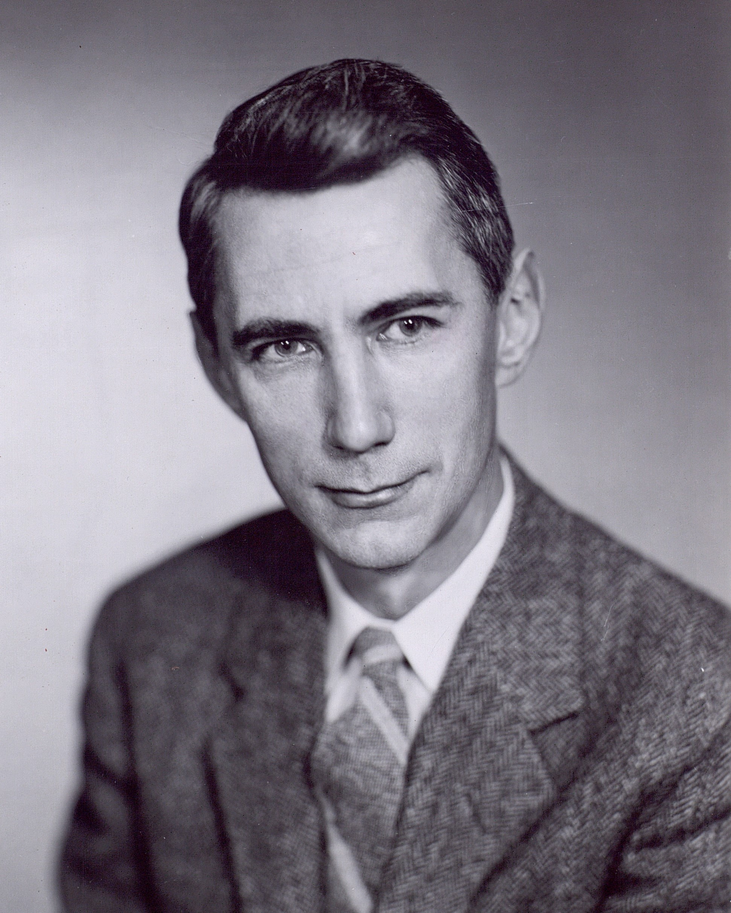
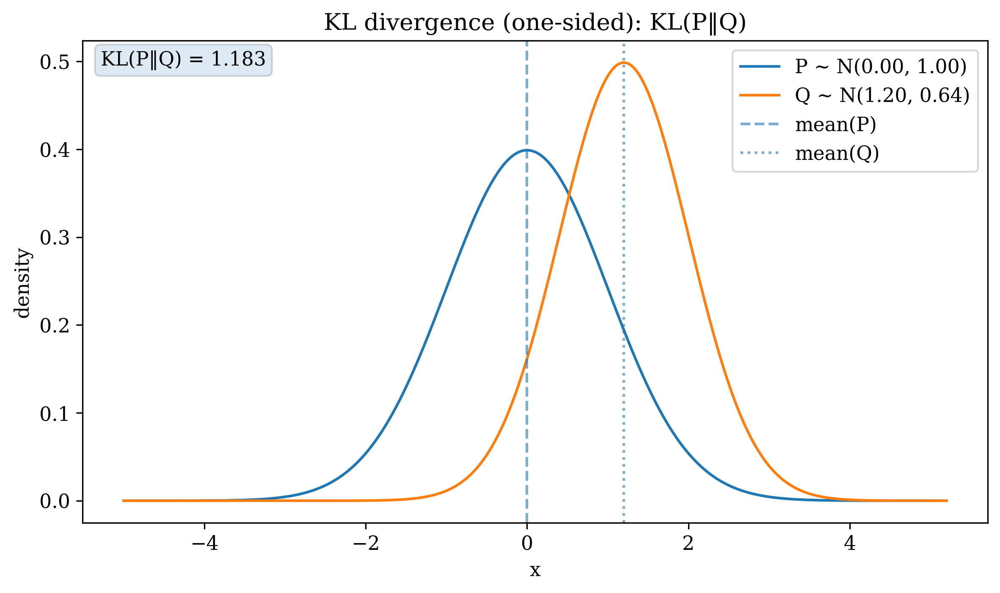
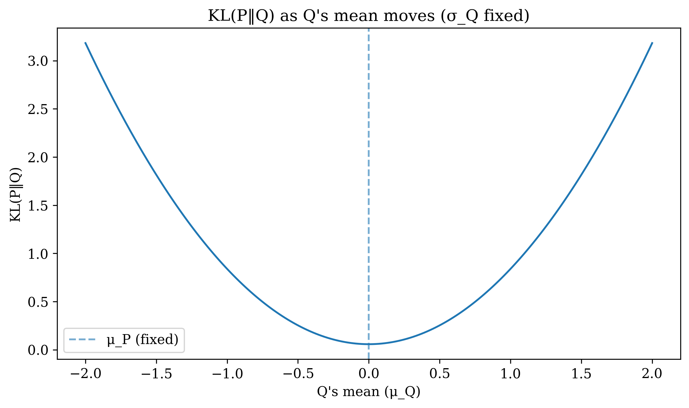

Machine-learning guide
Variational autoencoders
The thesis appendix retains the evidence lower bound, Gaussian latent distribution and reparameterisation equations. This page provides the extended information-theory background, generation examples and latent-space demonstrations.
Entropy and cross-entropy
Let X be a discrete random variable with probability distribution P and probability mass function p(x). Entropy measures the average uncertainty associated with the possible outcomes.
A distribution concentrated on one outcome has zero entropy. A more even distribution generally has greater entropy. Base-two logarithms express entropy in bits, while natural logarithms express entropy in nats.
Suppose that a distribution Q, with probability mass function q(x), approximates P. The cross-entropy is the expected coding cost when Q represents observations drawn from P.
Kullback-Leibler divergence
The difference between cross-entropy and the entropy of P is the Kullback-Leibler divergence.
For continuous distributions, the summation becomes an integral over their probability density functions.
The divergence is non-negative and equals zero only when the two distributions are equal almost everywhere. It is not a distance metric because it is directed and generally asymmetric.
Historical note
A widely repeated anecdote attributes the use of the term entropy to advice given by John von Neumann to Claude Shannon. Tribus and McIrvine later recounted the story. Shannon subsequently stated in an oral-history interview that he was quite sure the exchange had not occurred. The account should therefore be treated as an anecdote rather than a verified transcript.


Gaussian example
The first illustration compares two Gaussian distributions with different means and variances. Their difference gives a positive divergence. The second illustration changes the mean of Q while retaining its variance. The divergence is lowest when the means coincide, but remains positive because the variances are different.


From a point to a distribution
A deterministic autoencoder maps an observation to one embedding. A variational autoencoder maps the observation to the parameters of a probability distribution. A latent sample is drawn through the reparameterisation step and supplied to the decoder.
Data generation
After training, a latent vector can be sampled from the prior and passed through the decoder. The generated output follows the structure learned from the training observations. The MNIST digits below provide a simple visual example; generation was not used in the environmental regionalisation.

Two-dimensional latent representation
A two-dimensional bottleneck allows every embedding to be drawn directly. Digit classes occupy overlapping but distinguishable parts of the latent space, while gradual changes between nearby embeddings illustrate the continuous organisation encouraged by the variational objective.

Three-dimensional latent representation
Adding a third latent dimension gives the decoder more capacity to organise the observations. The resulting representation cannot be inspected in one flat view without projection, but the class structure remains visible in the three-dimensional plot.

Interpolation between latent regions
Linear interpolation places equally spaced points between two latent positions and decodes each point. The sequence below moves between consecutive digit-class centres. Intermediate outputs show how the decoder changes gradually along the selected latent path.

Sources
- Cover and Thomas, Elements of Information Theory, 1999.
- Tribus and McIrvine, Energy and Information, 1971.
- Kingma and Welling, Auto-Encoding Variational Bayes, 2014.